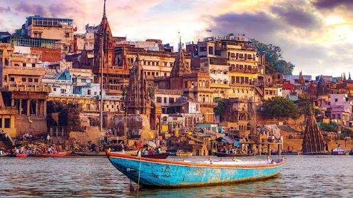

Place to visit
At the land of God
- Ghat,DashashwamedhGhat
- Aasi Ghat
- Scindhia Ghat
- Rajdari waterfall
- Daily Ganga Aarti
- Ramnagar fort

Ghat,DashashwamedhGhat

Aasi Ghat

Scindhia Ghat

Rajdari waterfall

Daily Ganga Aarti

Ramnagar fort